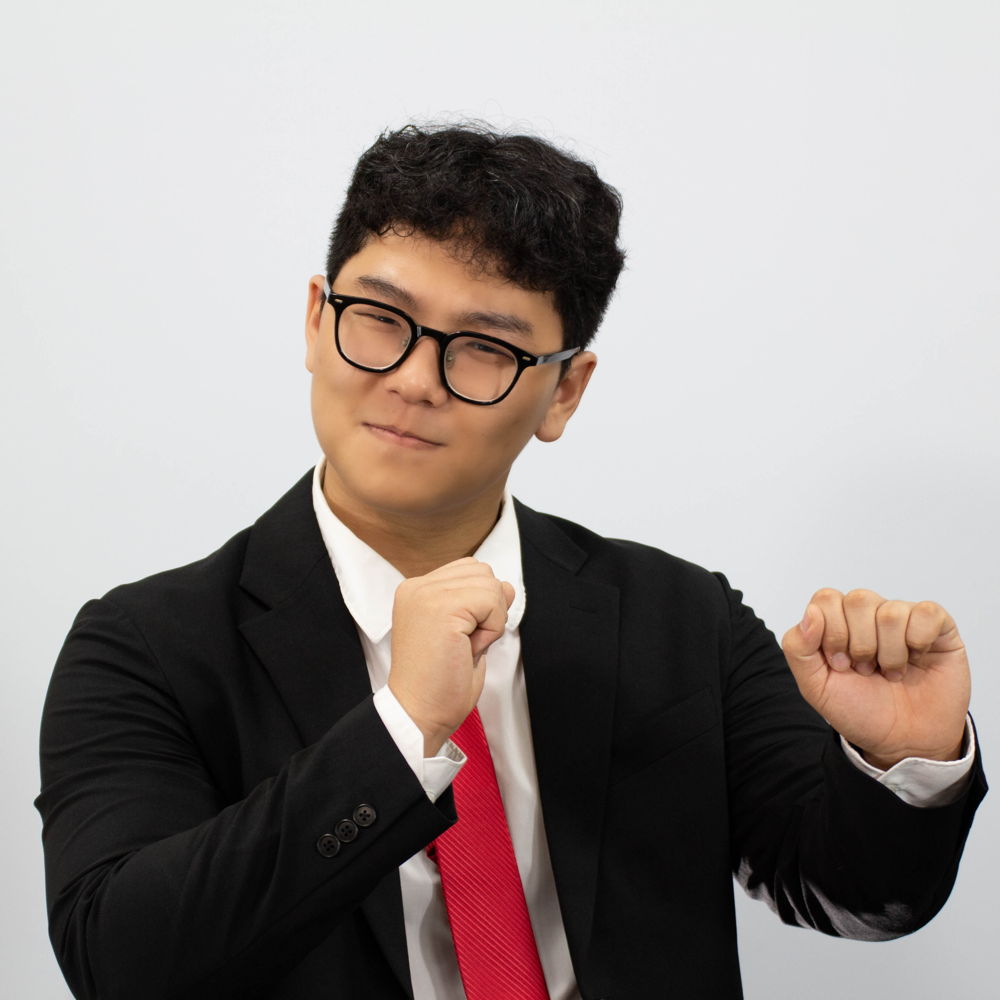

Chair Letter
Esteemed delegates,
My name is Siwoo Yang, and I will be serving as your Head Chair, along with Yuchan Moon, for the Historical Security Council of KISMUN 2025. We welcome you to the beginning of HSC in KISMUN history, with the topic of “The Cuban Missile Crisis”.
Like everything else you will face in life, MUN is a place where your goal is to try at first, rather than to succeed at once. You will face challenges that will make you feel small. However, we eventually all realise how strong we’ve become by stepping outside that comfort zone, and by pushing ourselves to those challenges that were thought to be insurmountable.
For those of you who discover yourselves growing day by day and realise the joy of challenging, I believe it is time for you to set your goals to a new stage. As a chair of the Historical Security Council, it will be a pleasure for me to encourage you guys to a new phase of your MUN journey. We will now have to crave more than just to try, but show the house how strong you’ve become. You will face new responsibilities and sometimes have to burden yourself.
The new goals and destinations of your journey will be different for all of you, and will at first look insurmountable, again. But as we go through the 3 days of the conference, I guarantee each of you will eventually seize your moments, leading to the next chapter of your career.
Once again, welcome to the Historical Security Council, and we are truly delighted to hear your voices, writing down a new history of humanity. Like always, follow the path to where courage leads you.
Warmly,
Siwoo Yang
Head Chair of the Historical Security Council, KISMUN 2025